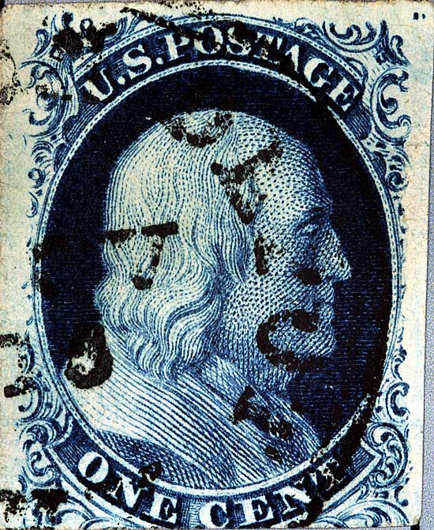
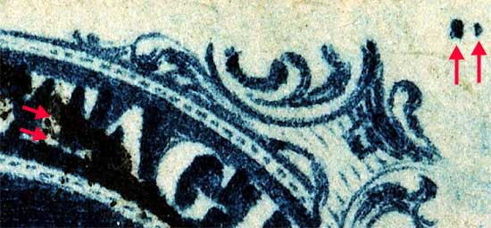
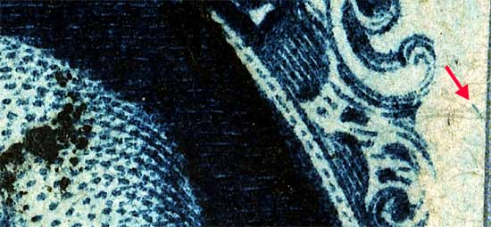
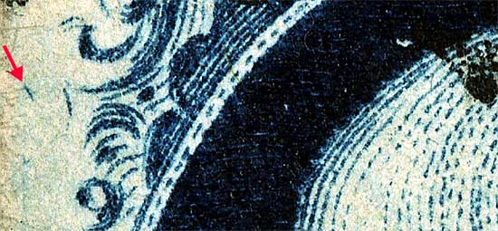

1¢ Franklin Issue of 1851-1857, PLATE 3 Pos 9L3, (Scott #7) |
| Scott #7 Blue, Type II, Relief T Issued only imperforate. It should be noted that the plating drawings for 1L3 to 16L3 in the 1972 Neinken book are incorrect. The diagrams where later corrected in 1981. The corrections were published in the USPCS Chronicle Whole Number 110, May 1981. This stamp is part of a strip of 3. (See 7L3 and 8L3.) |
|  |
| Figure 1. (Below) Top row GUIDE DOTS and the location of a vertical line of color in the T of POST which in this case has been obscured by cancellation ink.
 |
| Figure 2. (Below) Red arrow points to a diagonal dash of color SE of Ornament "M." The corrected plating diagram found in USPCS Chronicle Whole Number 110, May 1981 illustrates this mark closer to Ornament "B" of Position 10L3. It should be noted that this dash appears on many top row or "T" relief positions from plates 1, 2 and 3.
 |
| Figure 3. (Below) A dash of color SW of Ornament "B" as illustrated in the corrected plating diagram found in USPCS Chronicle Whole Number 110, May 1981. It should be noted that this dash appears on many top row or "T" relief positions from plates 1, 2 and 3.
 |
DISCLAIMER and COPYRIGHT INFORMATION: Thanks for visiting this site. I hope you learn something new as we are making new discoveries all the time. You, the visitor, have my permission to link to my pages and to share the INFORMATION with others. The images themselves fall under the fair use guidelines established by the United States Congress and Copyright law. Basically contact us before using. I also ask in return that you send me an e-mail if I have made a mistake, or have made some other technical blunder that in my rush to put these pages up would cause the visitor confusion. Please also visit my other website at www.slingshotvenus.com. and support the live music arts. While your there, be sure to purchase our music. There are not many philatelic rock stars around and we need all the help we can get. :-) I can be reached at: nerdman@ix.netcom.com Update 10/3/06 |